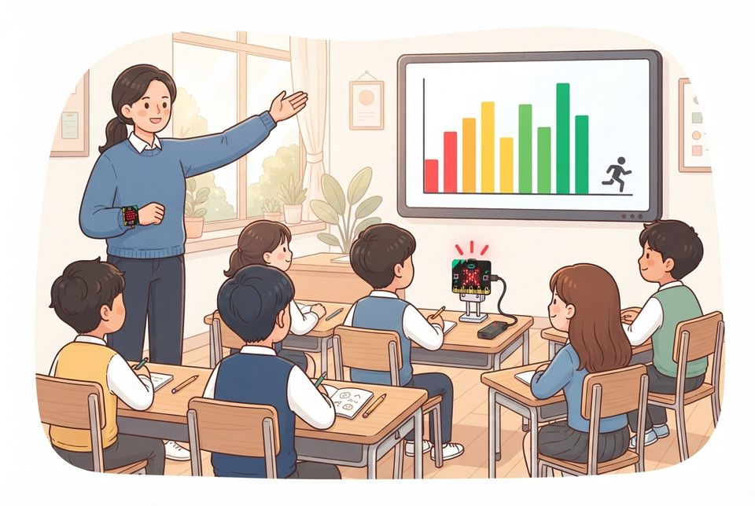
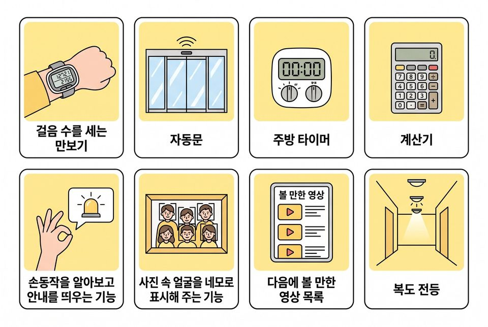
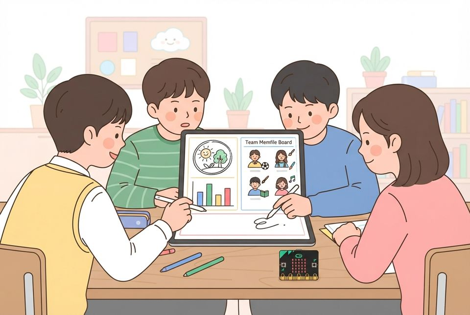

6학년 1~2차시 인공지능과 우리 생활 [6실인공지능01-01]
판별 기준으로 정해진 규칙대로 반응만 하는 기계와 인공지능을 가르고 AI 도우미 팀 소개판 만들기
학습 문제 — 판별 기준으로 정해진 규칙대로 반응만 하는 기계와 인공지능을 가려 보고, 학교와 가정의 인공지능 사례를 조사해 우리 팀 소개판을 만들어 봅시다.
개요
| 성취기준 | [6실인공지능01-01] 생활 속 인공지능 사례를 찾아보고, 판별 기준에 따라 정해진 동작만 되풀이하는 기계와 인공지능을 구분한다. 연계 성취기준: [6실05-05] |
|---|---|
| 핵심 역량 | 지식정보처리 역량, 창의적 사고 역량 |
| 핵심 기능 | ① 생활 속에서 활용되는 컴퓨터의 사례 탐색하기 ② 같은 마이크로비트의 소음 신호등과 동작 알아보기를 판별 기준으로 가르기 ③ 사용자 쪽지로 학교·가정의 인공지능 사례를 조사해 판정하기 ④ 출처와 조회 날짜를 밝혀 문제가 중요한 근거 찾기 ⑤ 팀 소개판을 만들어 30초 팀 소개로 발표하기 |
| 가치 태도 | 인공지능이 사회에 미치는 영향을 파악하는 자세 확인하지 못한 것을 단정하지 않고 더 알아보려는 자세 |
교수학습 활동
1차시 도입 동기 유발 · 학습문제 제시1차시 전개 활동1. 같은 마이크로비트, 두 방식 견주기 · 활동2. 사례 판정과 사용자 쪽지 현장 조사2차시 전개 활동3. Canva 팀 소개판 만들기 · 활동4. 30초 팀 소개와 구호 외치기2차시 정리 배운 내용 정리 · 다음 차시 예고
1차시도입8분
동기 유발
- 모둠이 ‘AI 도우미 팀’이 되어 학교 의뢰를 풀어 가는 프로젝트 안내 듣기
- 5학년 때 만든 무선 도구가 언제 불을 켰는지 떠올려 말하기
- 교사 손목의 마이크로비트가 동작 이름을 맞히는 장면 보기

학습문제 제시
- 판별 기준으로 정해진 규칙대로 반응만 하는 기계와 인공지능을 가려 보고, 학교와 가정의 인공지능 사례를 조사해 우리 팀 소개판을 만들어 봅시다.
준비물교사용 컴퓨터, 대형 화면
자료AI 현장 조사표, [도입] 상황 그림
유의점사용자 쪽지는 한 주 전 사전 과제로 받아 둔다.
유의점소음 신호등을 만들지 않은 학급은 조사표의 신호등 설명 그림으로 대신한다.
유의점상표 이름을 말하면 무엇을 해 주는 기능인지로 다시 말하게 한다.
유의점조사표 배부 시간을 도입 시간에 포함한다.
1차시전개32분
활동1. 같은 마이크로비트, 두 방식 견주기 (12분)
- 조사표 맨 위 AI 판별 기준 문장 함께 읽기
- 소음 신호등 코드 [소리 크기 > 기준 → 빨간불] 짚어 보기
- 소리가 크면 늘 같은 불만 켜지는 정해진 반응임을 확인하기
- 모둠 대표가 CreateAI 동작 모델 앞에서 움직이고 동작 이름과 확신 % 읽기
- 새 동작을 세 번 녹화해 다시 학습하는 모습 보기
- ‘정해진 반응’과 ‘데이터로 배움’ 칸에 나누어 까닭 쓰기

활동2. 사례 판정과 사용자 쪽지 현장 조사 (20분)
- 사례 카드 네 장을 듣고 손가락으로 판정하기
- 하나(정해진 반응)·둘(규칙 기반)·셋(데이터로 배움) 들기
- 갈린 카드는 주먹(더 알아봐야 함)으로 두고 까닭 듣기

- 사전 과제로 받은 사용자 쪽지를 모둠에서 돌려 읽기
- 쪽지 속 AI 사례를 상표 대신 기능 이름으로 조사표에 적기
- 사례마다 무엇을 보고 무엇을 하는지와 판정 까닭 쓰기
- 쪽지 속 불편에서 우리 팀이 도울 학교 사람 한 명 고르기
준비물마이크로비트 V2 2대, 배터리 팩, 손목 밴드
자료사례 카드 여덟 장, 사용자 쪽지(한 주 전 미리 받음)
유의점동작 모델은 CreateAI에서 미리 학습해 두고, 연결이 안 되면 시연 영상으로 대신한다.
유의점AI 판별 기준: 사람이 판단하던 일(가르기·알아보기·안내하기 등)을 사람의 지식을 규칙으로 옮기거나 데이터로 배워 대신하면 인공지능, 정해진 동작만 되풀이하면 인공지능이 아니다.
유의점소음 신호등은 정해진 규칙대로 반응만 하는 기계(인공지능 아님)이고, 동작 알아보기는 데이터로 배운 인공지능임을 가른다.
유의점규칙 기반은 사람의 판단 지식을 규칙으로 옮긴 방식으로, 3~4차시에 규칙표로 자세히 다룬다.
유의점확신 %(신뢰도)는 정답이 아니며, 센서가 있다고 모두 인공지능은 아님을 짚는다.
유의점갈린 카드는 ‘더 알아봐야 함’에 두어도 되며, 확인하지 않은 상표·숫자는 답으로 쓰지 않게 한다.
유의점쪽지에는 쓴 사람 이름과 가정 사정을 적지 않고, 쪽지가 없는 학생은 예시 쪽지를 쓴다.
유의점사례를 떠올리기 어려운 학생에게는 집·학교·길 그림 도움 카드를 준다.
유의점경계 해설: 기준값 하나로 정해진 반응만 되풀이하면 인공지능이 아니고, 사람이 여러 조건을 따져 내리던 판단을 규칙으로 옮기면 규칙 기반 인공지능이다.
2차시전개33분
활동3. Canva 팀 소개판 만들기 (25분)
- 교사가 보낸 Canva 수업 링크로 모둠 템플릿 열기
- 팀 이름과 한 문장 팀 구호, 팀 상징 그림 정하기
- 돕고 싶은 학교 사람과 그 사람의 문제 정의 문장 쓰기
- KOSIS 통계놀이터나 구글 트렌드에서 근거 자료 한 개 찾기
- 근거 캡처에 출처·검색어·조회 날짜 적기
- AI 판정 칸에 ‘정해진 반응으로 충분·AI 필요·더 알아봐야 함’ 중 골라 까닭 쓰기
- 리더·AI 개발자·코더·디자이너·테스터 역할 나누기

활동4. 30초 팀 소개와 구호 외치기 (8분)
- 팀 소개판을 띄우고 모둠원이 한 문장씩 30초 팀 소개하기
- 소개 끝에 팀 구호를 다 함께 외치기
- 듣는 팀은 AI 판정 까닭이 판별 기준과 이어지면 응원 스티커 붙이기
준비물모둠 태블릿, 색연필, 응원 스티커
자료Canva 수업 링크와 팀 소개판 템플릿, 근거 사이트 목록(KOSIS 통계놀이터, 구글 트렌드)
유의점Canva는 학교 계정 정책을 확인해 쓰고, 실명·얼굴 사진은 올리지 않는다.
유의점Canva의 AI 생성 기능을 쓰면 ‘AI 도움’ 표시를 붙인다.
유의점근거에는 출처·조회 날짜를 적고, 트렌드 0~100은 관심도 비교 값이지 사람 수가 아님을 짚는다.
유의점AI 판정 까닭은 조사표에 각자 쓰게 하고, 모둠 결과로 개인 성취를 대신 판단하지 않는다.
유의점인터넷이 안 되면 A3 용지와 인쇄한 통계 자료로 대신한다.
유의점빨리 끝낸 모둠은 근거를 하나 더 찾아 견주게 한다.
2차시정리7분
배운 내용 정리 (5분)
- 센서가 달린 기계는 모두 인공지능인지 까닭과 함께 적기
- 인공지능이 무엇을 하는 프로그램인지 판별 기준의 말로 적기
다음 차시 예고 (2분)
- 팀마다 사서 선생님의 첫 의뢰서(학급문고 책 분류) 받기
- 팀 소개판을 출력해 학급 프로젝트 게시판에 붙이고 조사표 제출하기
자료AI 현장 조사표, 팀 소개판 출력물, 첫 의뢰서
유의점쓰기가 어려운 학생은 말로 확인하고 도운 사실을 적는다.
유의점판정이 교사 생각과 달라도 근거가 기준과 이어지면 낮게 보지 않는다.
평가 계획
인공지능 소양 · 기계와 인공지능의 구분
판별 기준으로 소음 신호등(정해진 반응)과 동작 알아보기(데이터로 배움)를 가려 까닭을 쓰고, 조사한 인공지능 사례를 판정하며, 팀 소개판에 돕는 사람의 문제·근거·AI 판정을 담을 수 있는가?
| 수준 | 평가 기준 |
|---|---|
| 매우 잘함 | 소음 신호등은 소리가 크면 정해진 불만 켜는 ‘정해진 규칙대로 반응만 하는 기계’(인공지능 아님)이고, 동작 알아보기는 녹화한 예시(데이터)로 배워 동작을 가려내는 인공지능이라는 까닭을 판별 기준의 말로 쓰며, 센서 값을 쓴다는 것만으로는 가를 수 없음을 설명한다. 조사한 사례마다 무엇을 보고 무엇을 하는지와 판정 까닭을 쓰고 갈리는 사례의 확인 방법을 적으며, 팀 소개판의 AI 판정 까닭을 기준과 잇고 출처·날짜를 밝힌 근거로 문제의 중요성을 설명한다. |
| 잘함 | 두 방식을 판별 기준에 따라 가르고, 조사한 사례 두 개 이상에 판정과 까닭을 쓴다. 팀 소개판에 돕는 사람의 문제 정의 문장과 출처를 적은 근거, AI 판정 까닭을 담는다. |
| 보통 | 정해진 반응만 하는 기계는 구분하나 까닭이 판별 기준과 이어지지 않거나, 팀 소개판의 AI 판정 까닭이나 근거의 출처가 비어 있다. |
| 노력요함 | 교사가 판별 기준을 다시 읽어 주고 사례와 도움 카드를 함께 짚어 준 뒤에도 두 방식을 가르거나 까닭을 적는 데 어려움이 있다. |
| 미관찰 | 결석이나 미제출, 시간 부족으로 확인하지 못한 경우. 낮은 성취로 적지 않고 따로 기록한 뒤 보충 확인 시점을 정한다. |
평가 방법 AI 현장 조사표 분석 · 산출물(팀 소개판) 분석 · 구술 확인(팀 소개 발표) · 관찰
연동 도구·링크
과정안에 나오는 도구가 저절로 걸립니다. 수업 전에 학교망에서 열리는지, 블록·메뉴 이름이 바뀌지 않았는지 확인하세요.
마이크로비트 V2 ↗LED·버튼·가속도·소리 센서, 무선 통신계정: 필요 없음micro:bit CreateAI ↗움직임 데이터로 동작 모델 학습·시험, 움직임 그래프계정: 필요 없음(크롬·엣지)CreateAI 사용 안내 ↗micro:bit CreateAI 안내Canva ↗SW 지도, 공감 지도(화이트보드), 미션 포스터, 팀 소개판계정: 교사가 만든 수업(클래스) 안에서 사용KOSIS 통계놀이터 ↗어린이용 공식 통계, 근거 데이터 찾기계정: 필요 없음비주얼 통계 ↗KOSIS 통계놀이터 안내KOSIS 국가통계포털 ↗전국 통계와 우리 반 자료 견주기계정: 필요 없음구글 트렌드 ↗관심 변화(상대값) 보기 — 교사 화면 시연계정: 필요 없음
내 수업 링크
학급 패들렛, 엔트리 작품, 활동지 주소처럼 이 차시에 쓸 링크를 걸어 둡니다. 이 브라우저에만 저장되고 밖으로 보내지 않습니다. 학생 이름이 든 주소는 넣지 마세요.